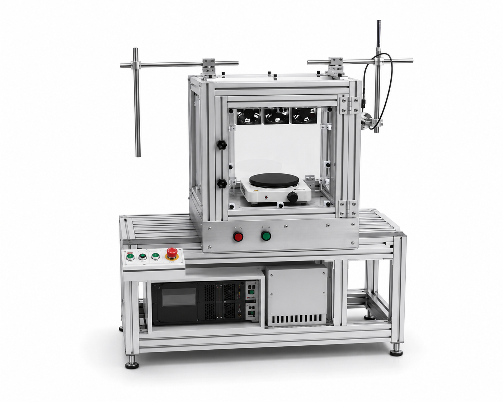

RESOURCE CIRCULATION
폐자원에서 다시
가치를 찾아내는 기술
초분광·열화상 센서로 폐플라스틱 등 폐자원의 재질 성분을 실시간으로 분석해 소재별 자동 선별을 지원합니다. 선별 정확도를 높이고 수작업 의존도를 낮춰, 재활용률 향상과 자원순환 공정 전반의 효율·경제성을 개선합니다.

초분광·열화상 센서로 폐플라스틱 등 폐자원의 재질 성분을 실시간으로 분석해 소재별 자동 선별을 지원합니다. 선별 정확도를 높이고 수작업 의존도를 낮춰, 재활용률 향상과 자원순환 공정 전반의 효율·경제성을 개선합니다.

비파괴·비접촉 방식의 폐플라스틱 다중센서 AI 선별 시스템
AI 선별 알고리즘을 고도화하고 폐배터리 해체·재활용 공정 필드 실험까지 수행한 TRL 6(2024)을 거쳐, 폐플라스틱 품질 진단 원천기술을 확보한 TRL 7(2025)에 도달했습니다. 2026년에는 초분광·가시광 융합 검증을 통해 폐플라스틱 분류 신규 사업모델을 위한 기술 검증을 진행하고, 2027년에는 다중 스펙트럼 자율지능형 AI 선별시스템으로 발전시키는 로드맵을 갖고 있습니다. 시스템은 가시광·열화상 센서와 고정 장치·조명·촬영각도 조절 구조로 구성됩니다.
2025년 폐플라스틱 선별 납품업체 및 폐배터리 선별 시스템 개발 의뢰 업체를 대상으로 기존 제품에 대한 시장검증을 완료했습니다. 그 결과 고가의 초분광 센서만으로 시스템을 구축하기에는 도입 장벽이 높아, 단가를 낮출 수 있는 융합형 선별 시스템에 대한 요구가 확인되었습니다. 파인사이드는 가시광·열화상 융합 기술로 이에 대응하며, 2026년에는 폐배터리 선별 시스템으로 검증 범위를 넓히고 있습니다.

폐플라스틱 선별 장비 제조사. "폐플라스틱 분류 One-Stop 시스템" 공동개발, TRL 6→7 스케일업 진행